Image Warping and Mosaicing
Part A. Photos taken by rotating the camera are related by homographies, so a handful of point correspondences is enough to line them up. This part recovers those homographies by least squares, writes two inverse warps from scratch (nearest neighbor and bilinear), rectifies flat objects photographed at an angle, and stitches three sets of photos into blended mosaics.
Shoot the Pictures
Three sets of photos, each shot from a single standpoint while rotating the camera between frames — a pan for the outer courtyard and the inner atrium, a tilt for the gateway. With a fixed center of projection, two frames of the same scene differ only by a projective transformation (a homography), no matter how the scene is arranged in depth, so one 3×3 matrix per frame is enough to register them. The middle frame of each set is the reference that the other two are warped into.
Outer courtyard — pan
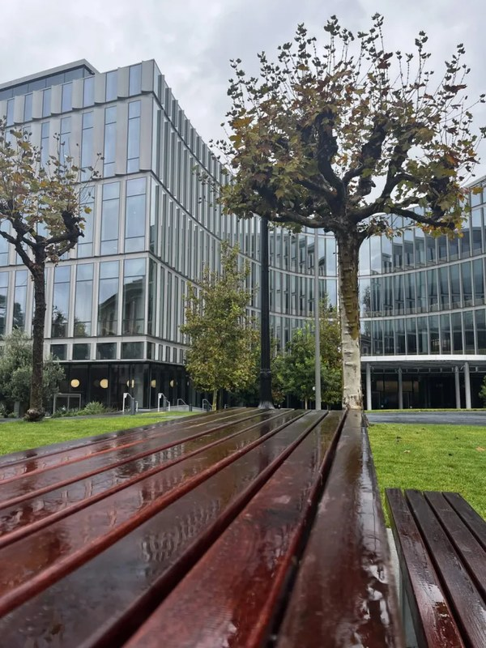
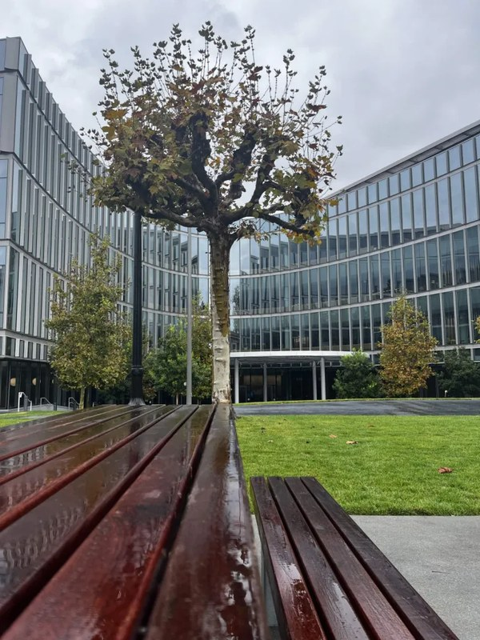
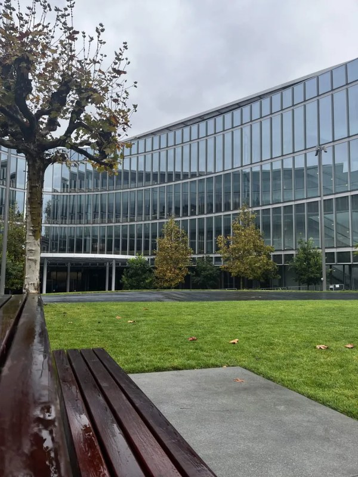
Inner atrium — pan
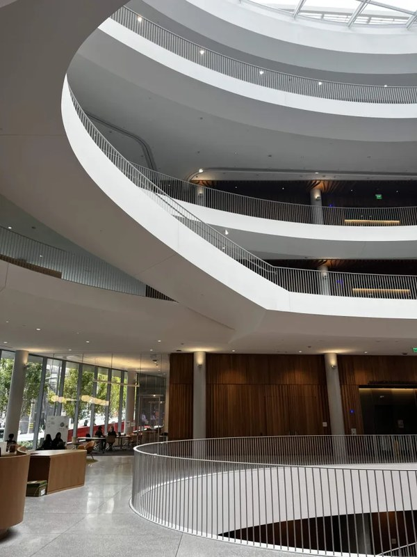
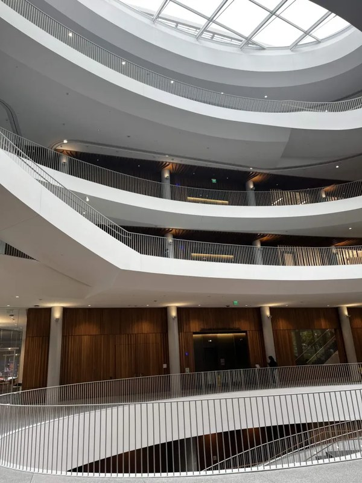
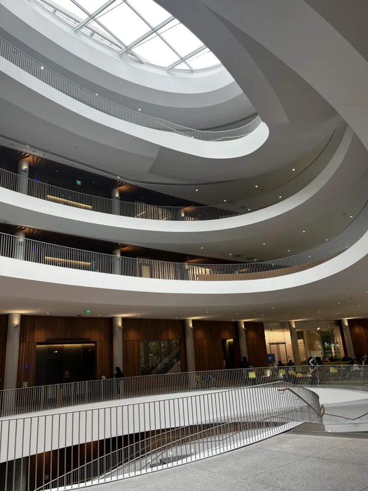
Gateway — tilt
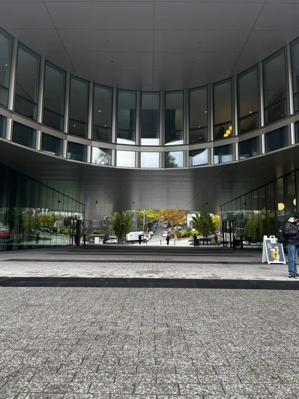
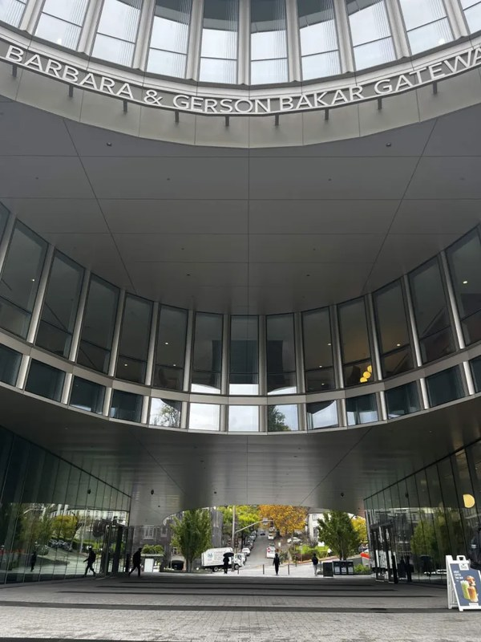
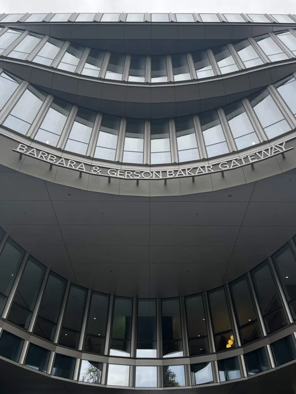
Recover Homographies
A homography maps a point (x, y) in one image to (x′, y′) in another using homogeneous coordinates, and is defined only up to scale — so fixing the bottom-right entry to 1 leaves eight unknowns.
(wx′, wy′, w)T = H (x, y, 1)T, H = [ a b c ; d e f ; g h 1 ]
x′ = (ax + by + c) / (gx + hy + 1), y′ = (dx + ey + f) / (gx + hy + 1)
Multiplying out the denominators makes both equations linear in the unknowns, so every correspondence contributes two rows:
| x | y | 1 | 0 | 0 | 0 | −xx′ | −yx′ |
| 0 | 0 | 0 | x | y | 1 | −xy′ | −yy′ |
| a |
| b |
| c |
| d |
| e |
| f |
| g |
| h |
| x′ |
| y′ |
Stacking n correspondences gives Ah = b, with
A of size 2n×8. Four points determine H exactly; with more, the
system is overdetermined and computeH solves it in the least-squares sense,
which averages out the small errors in each picked point.
def computeH(im1_pts, im2_pts):
A, b = [], []
for (x, y), (xp, yp) in zip(im1_pts, im2_pts):
A.append([x, y, 1, 0, 0, 0, -x*xp, -y*xp]); b.append(xp)
A.append([0, 0, 0, x, y, 1, -x*yp, -y*yp]); b.append(yp)
h, _, _, _ = np.linalg.lstsq(np.array(A), np.array(b))
return np.append(h, 1).reshape(3, 3)Worked example: outer_left → outer_mid
Six correspondences on distinct structural features: a building corner, points along the base of the building and its entrance canopy, and two corners of the second bench. Point i in the left image is paired with point i in the middle image.
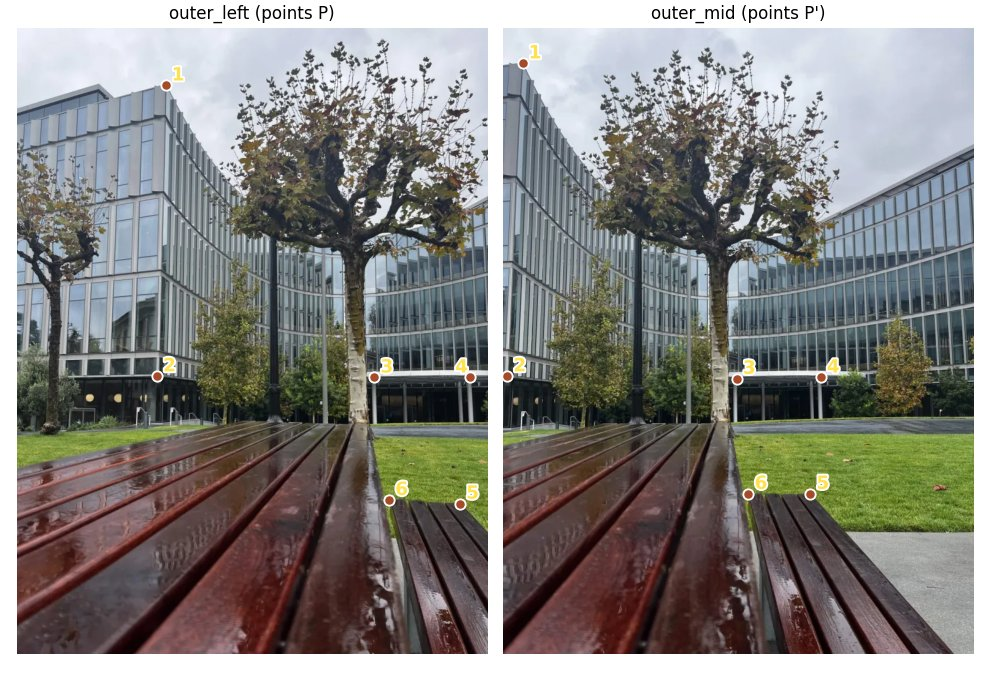
Six pairs give 12 equations for 8 unknowns. The full system, with the right-hand side b on the right (the rows alternate between the x′ and y′ equation of each correspondence):
x y 1 0 0 0 -x·x′ -y·x′ | b
-----------------------------------------------------
243 94 1 0 0 0 -7533 -2914 | 31
0 0 0 243 94 1 -14094 -5452 | 58
229 569 1 0 0 0 -1374 -3414 | 6
0 0 0 229 569 1 -130301 -323761 | 569
584 571 1 0 0 0 -222504 -217551 | 381
0 0 0 584 571 1 -334632 -327183 | 573
740 571 1 0 0 0 -383320 -295778 | 518
0 0 0 740 571 1 -422540 -326041 | 571
724 777 1 0 0 0 -362724 -389277 | 501
0 0 0 724 777 1 -550964 -591297 | 761
608 771 1 0 0 0 -243200 -308400 | 400
0 0 0 608 771 1 -462688 -586731 | 761Solving it with least squares gives h = (1.311, −0.01958, −282.4, 0.24, 1.183, −105.8, 0.0004174, −4.363×10−6), i.e. the recovered homography:
| 1.3112 | −0.019576 | −282.43 |
| 0.23997 | 1.1832 | −105.83 |
| 0.00041735 | −4.3628×10−6 | 1 |
As a check, pushing each left-image point through H lands within 1.24 px of its partner in the middle image, with a mean of 0.80 px (per-point errors: 0.24, 0.38, 1.24, 1.09, 1.13, 0.73). The residual of the linear system is ‖Ah − b‖ = 2.76.
The nonzero bottom-row entries, g ≈ 0.000417 and h ≈ −4.36×10−6, are what make this projective rather than affine: they make the scale factor w = gx + hy + 1 change across the image (here by about 32% from the left edge to the right edge), which is the foreshortening you see when the camera turns. The least-squares fit is only checked where the points are; away from them it extrapolates, and in my tests a pixel or two of difference in the points moved the far corners of a warped frame by ten pixels or more. That is why spreading the points across the overlap matters as much as how many there are.
Warp the Images
Both warps use inverse warping. Pushing source pixels forward through H would leave holes and overlaps in the output, so instead every output pixel p′ is pulled back through H−1 to a source location p, which is generally not an integer, and the source image is sampled there. The output canvas is found by pushing the four image corners through H and taking their bounding box. Output pixels whose source location falls outside the image keep alpha = 0, so the result is an RGBA image and “no data” is never confused with black.
| Method | What it does at p = (x, y) |
|---|---|
warpImageNearestNeighbor | Rounds p to the closest pixel and copies it. |
warpImageBilinear | Blends the four surrounding pixels, weighted by distance: with dx, dy the fractional parts, the weights are (1−dx)(1−dy), dx(1−dy), (1−dx)dy and dxdy. |
# core of warpImageBilinear (simplified)
p_src = p_out @ H_inv.T # every output pixel, pulled back through H^-1
x_src, y_src = p_src[..., 0] / p_src[..., 2], p_src[..., 1] / p_src[..., 2]
x0, y0 = np.floor(x_src).astype(int), np.floor(y_src).astype(int) # top-left neighbor
dx, dy = x_src - x0, y_src - y0
rgb = (1-dx)*(1-dy)*im[y0, x0] + dx*(1-dy)*im[y0, x0+1] + (1-dx)*dy*im[y0+1, x0] + dx*dy*im[y0+1, x0+1]Rectification
To test the warps I rectified two flat rectangles that were photographed at an angle: the four corners of each object were picked in the photo and mapped to the corners of an axis-aligned rectangle, so that H is the homography that makes the object fronto-parallel. The target sizes below are my guess at each object’s proportions; a wrong guess stretches the result but does not change how straight the edges are.
One practical problem: the default canvas is useless here. The wall’s vanishing line sits just
left of this photo, so the corner (0, 0) lands near (−26,900, −16,900) and the bounding box of
the whole warped image would be roughly 28,000×23,000 pixels. Both warp functions therefore
take an optional bounds argument, and for rectification I only render the target
rectangle plus a margin.
Example 1 — the wall display
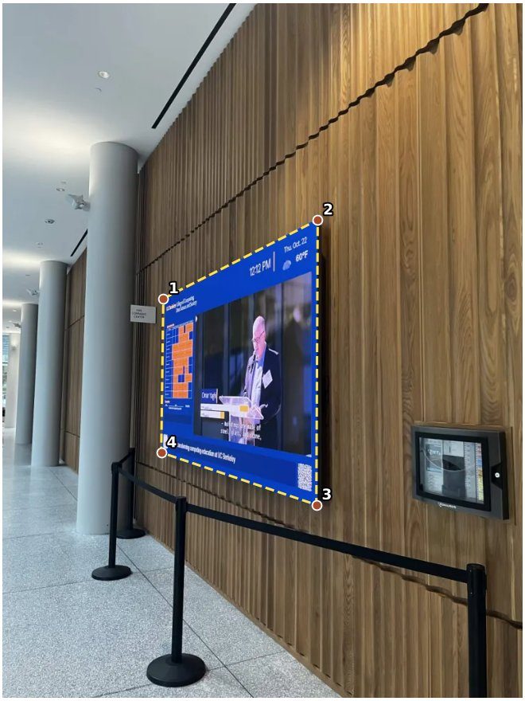
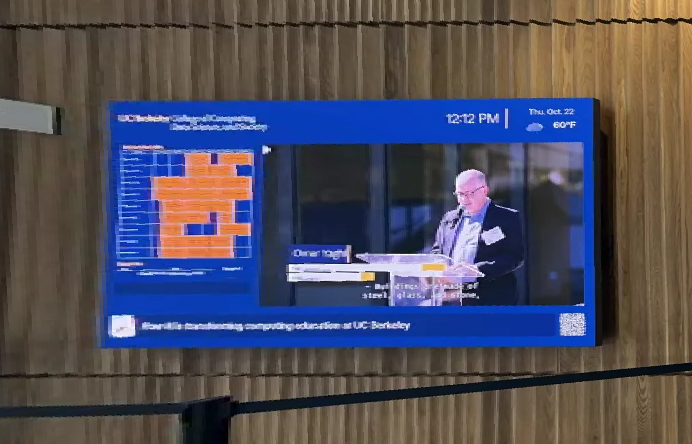
The corners map to a 1000×500 rectangle (a 2:1 guess), on a canvas with a 200-pixel margin so the wall around the screen is visible. The recovered homography is
| 110.9 | 1.465 | −2.692×104 |
| 15.48 | 30.44 | −1.691×104 |
| 0.05104 | 0.00118 | 1 |
The bottom-row entry g ≈ 0.051 is large because the wall is seen at a steep angle: the scale factor w changes by a factor of about 40 between the left and right edges of the photo. The display’s far (left) edge is only about 230 pixels tall in the photo versus about 420 for the near edge, so the left of the rectified image is magnified more and looks softer than the right.
Example 2 — the lecture slide
A second flat rectangle, from a different photo: the slide projected onto the screen in a lecture hall, photographed at an angle. The slide is the bright rectangle inside the gray screen, and its four corners are the ones picked below.
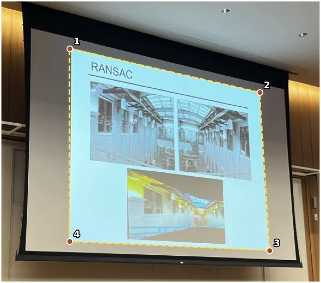
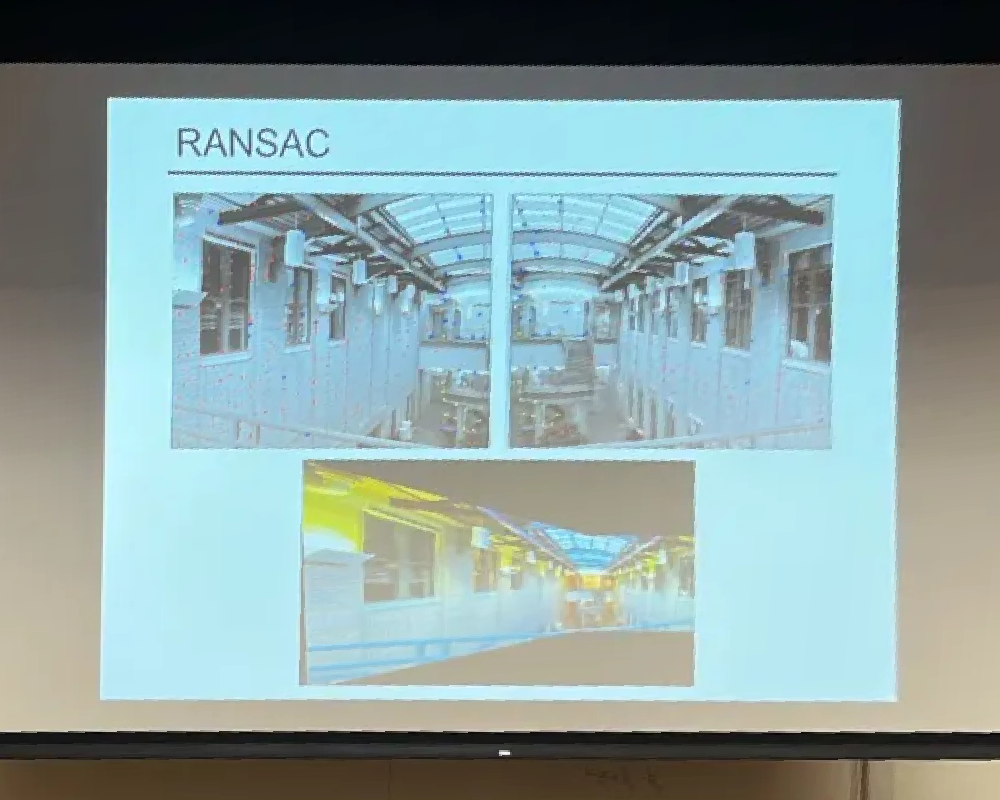
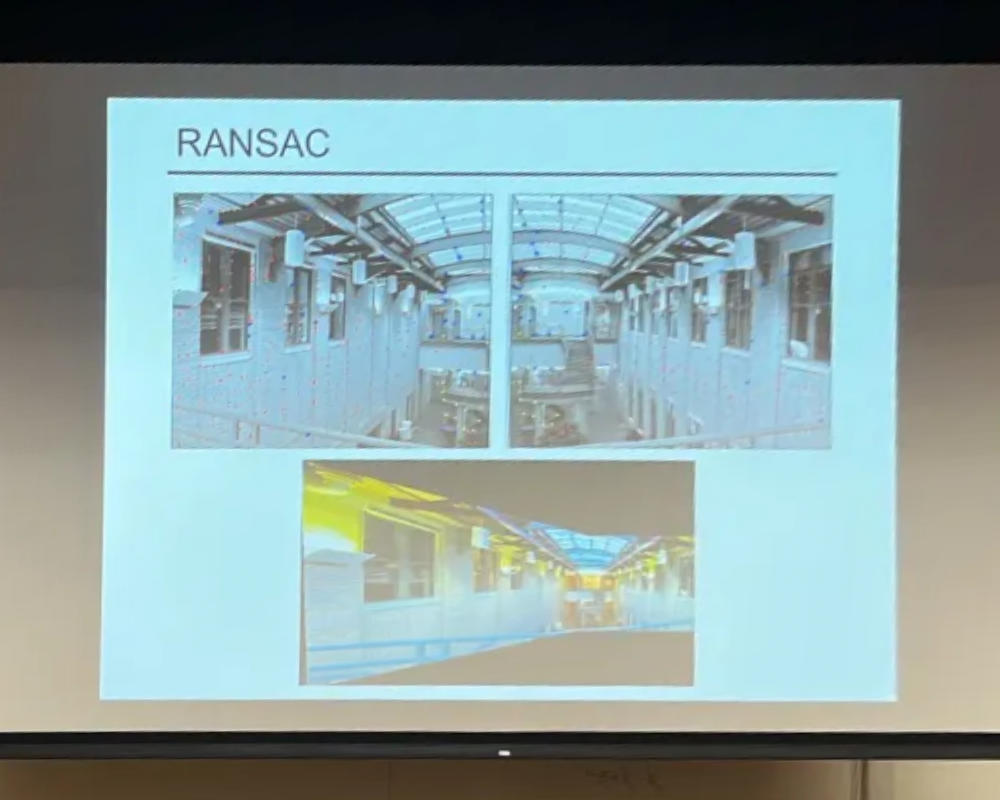
The target is an 800×600 rectangle (a 4:3 guess, the usual shape of a slide) with a 100-pixel margin that shows some of the screen around it. The slide’s edges come out straight and its lettering and photos have natural proportions, which is the check that the corners were picked accurately.
| 1.633 | 0 | −568.1 |
| −0.3632 | 1.571 | −547.6 |
| −0.0004949 | 0.0001611 | 1 |
Nearest neighbor vs. bilinear
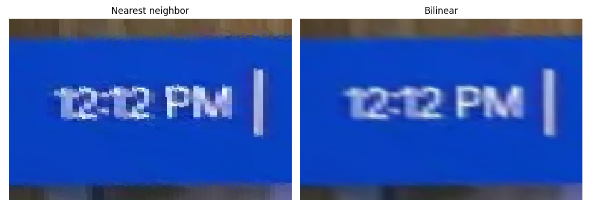
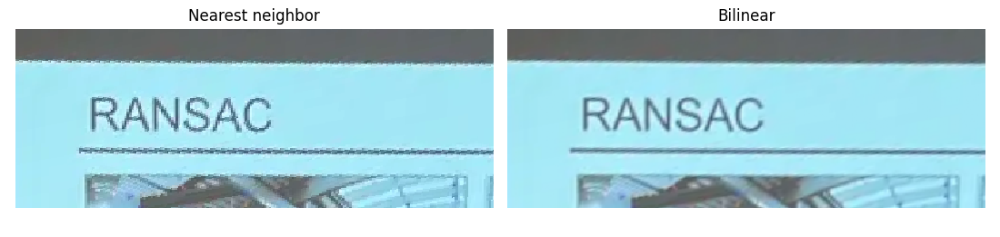
| Example | Output size | Nearest neighbor | Bilinear | Bilinear / NN |
|---|---|---|---|---|
| Wall display | 1400×900 | 161 ms | 465 ms | 2.9× |
| Lecture slide | 1000×800 | 102 ms | 288 ms | 2.8× |
Speed. Nearest neighbor does one lookup per output pixel. Bilinear does four lookups, computes four weights and sums them, so it takes roughly three times as long (2.9× and 2.8× here; median of five runs of the vectorized NumPy implementation on one laptop). Neither is slow at this size, but the gap would matter for a large panorama or a video.
Quality. Nearest neighbor keeps every pixel exactly as photographed, but because each output pixel snaps to a source pixel, straight edges turn into staircases and thin strokes break up — the digits in “12:12” are jagged, and the thin rule under “RANSAC” on the lecture slide breaks into a stair-step. Bilinear averages neighboring pixels, so edges are smooth and there is no blockiness, at the price of slight softening, since it can never create detail that was not in the photo. The more a region is magnified, the more bilinear wins; when the warp is close to a pure shift or a mild shrink, the two are nearly indistinguishable and nearest neighbor’s speed is hard to argue with. I use bilinear everywhere in the mosaics, where the quality gain is worth the cost.
Blend the Images into a Mosaic
Warping puts every frame in the same coordinates, but laying one frame over another would leave a hard edge wherever they meet, because neighboring photos never match perfectly: they differ a little in exposure and in alignment. The procedure below avoids that with weighted averaging, and then fixes the ghosting that averaging alone leaves behind.
- Pick a reference. The middle frame of each set. Every other frame gets a homography
into it from
computeH, so only two homographies are estimated per mosaic. - Size the canvas. Push the corners of every frame through its homography and take the bounding box of all of them.
- Warp. Inverse-warp each frame into that canvas with the bilinear warp. Alongside the image, warp a feathering weight that is 1 at the center of the original frame and falls linearly to 0 at its edge.
- Blend. Average the warped frames per pixel, weighted by their feathering weights. Weights are largest where a frame is best covered, so one frame fades into the next across the overlap instead of ending at a hard edge.
I(p) = ∑i wi(p) Ii(p) / ∑i wi(p)
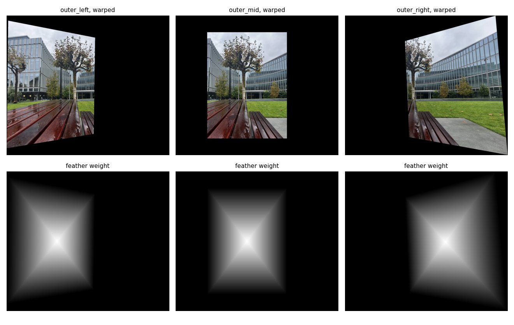
Weighted averaging is not quite enough
Averaging removes the hard seam, but anything that the homography cannot align — small errors in H, or nearby objects when a hand-held camera moves slightly between shots — is averaged with itself shifted by a few pixels, which shows up as ghosting. I therefore use a two-level pyramid. Each warped frame is split into a low-frequency band (a Gaussian blur with σ = 8, computed only over pixels the frame covers so that the black outside does not leak in) and a high-frequency band (the residual). The low band, which carries the exposure and color differences, is averaged with the feathering weights as before. The high band, which carries the edges and texture, is taken from whichever frame has the largest weight at that pixel, so it is never averaged with a shifted copy of itself.
I = ∑i wi Li / ∑i wi + Di*, i* = argmaxi wi
# 2-band blend, simplified from create_mosaic
low = gaussian_filter(rgb * mask, (sigma, sigma, 0)) / gaussian_filter(mask, (sigma, sigma, 0))
high = (rgb - low) * mask # per frame
low_blend = (low_stack * w_stack).sum(0) / w_stack.sum(0) # feathered average of the low bands
winner = np.argmax(w_stack, axis=0) # highest-weight frame per pixel
result = low_blend + np.choose(winner[..., None], highs)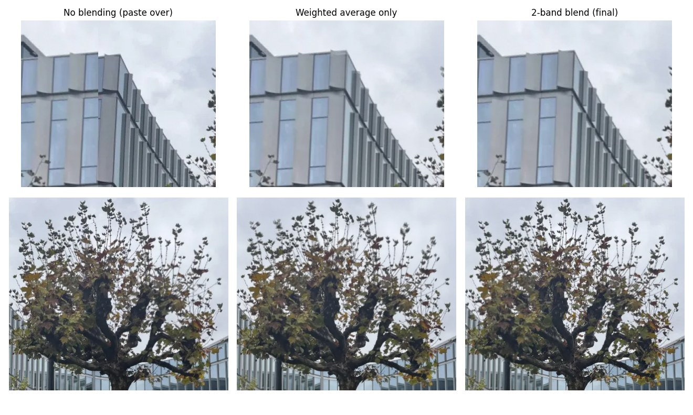
The top row shows why plain pasting fails: wherever one frame takes over from the next, the two disagree a little, and pasting turns that disagreement into an edge. Here the left and middle frames have the same average brightness over their overlap (within one gray level), but the facade’s roofline and window frames visibly shift where the middle frame starts; between the middle and right frames there is also a real exposure difference, the right frame being about 7 gray levels darker. Weighted averaging and the 2-band blend both hide the join. The bottom row shows what averaging alone cannot fix: the tree is closer to the camera than the building, and the camera moved slightly between frames, so the left and middle frames disagree about where each leaf is, even though the distant building lines up. Averaged, every leaf is doubled and the crown turns soft. In the 2-band result the colors still blend smoothly, but each twig comes from a single frame and stays sharp.
Mosaic 1 — Outer courtyard
Three frames panned left to right, registered into the middle frame.
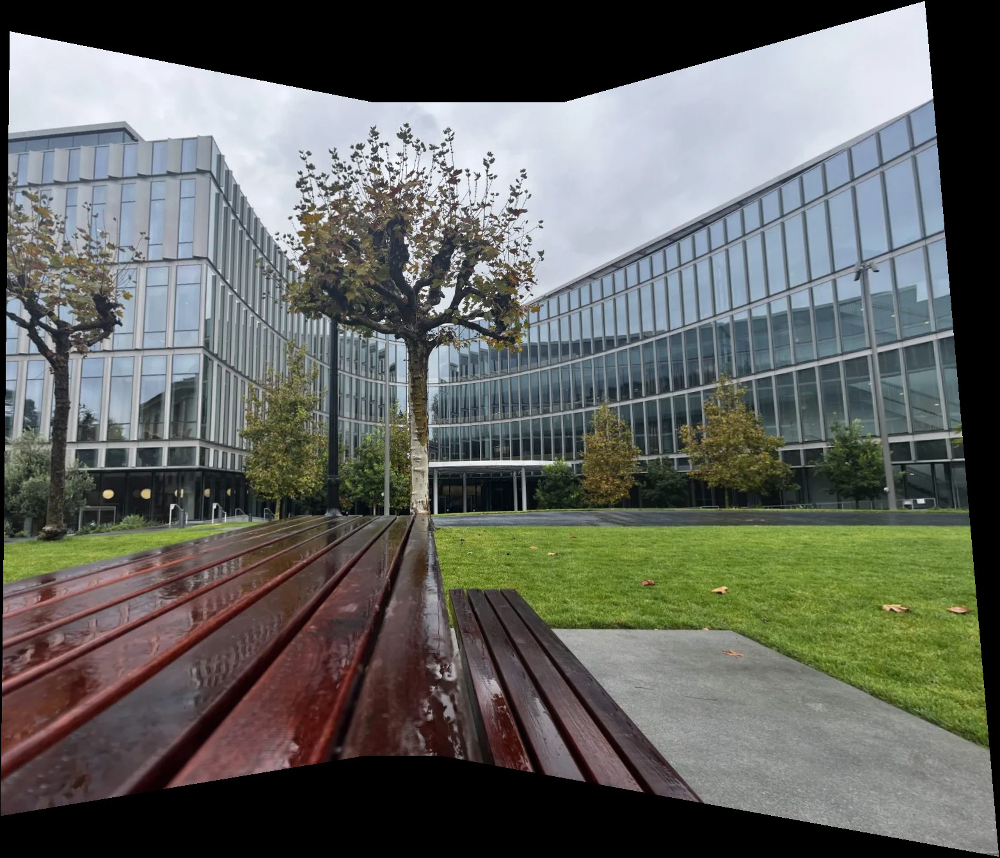
The three frames merge without a visible seam, including across the glass facades, whose regular grid of panes would make any misregistration obvious. The tree and the bench are closer to the camera than the distant building, so a small shift of the hand-held camera between frames moves them more; that is where the choice of blending matters, as the comparison above shows.
Mosaic 2 — Inner atrium
Another pan, indoors, with a strongly tilted view up into the atrium.
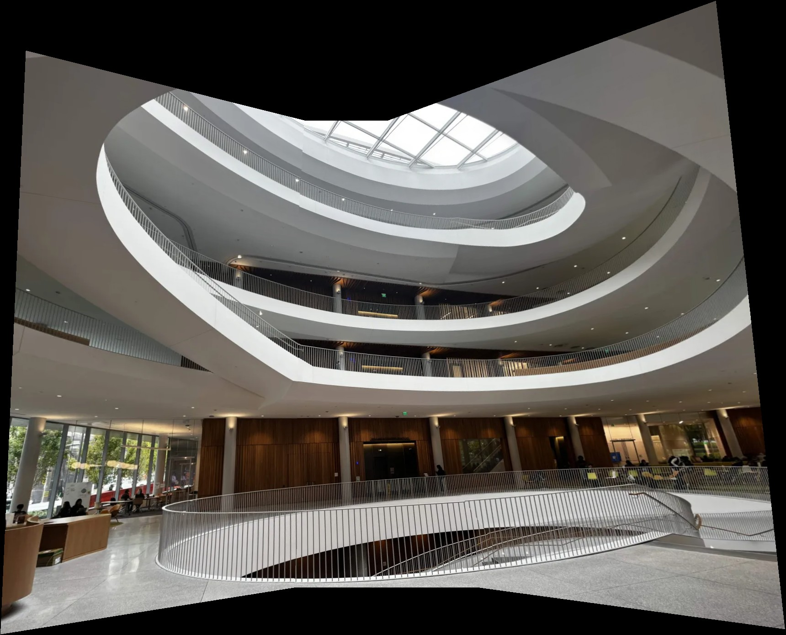
The railing is the hardest part of this scene to align, since it is a row of thin vertical bars: any residual error would show up as a doubled or broken bar. At full size no bar is doubled or broken where the frames overlap. The camera was tilted up, so the outer frames are warped noticeably more than in the courtyard set, which shows in the slanted outline of the mosaic.
Mosaic 3 — Gateway
A vertical sweep rather than a pan: three frames tilted up the front of the building.
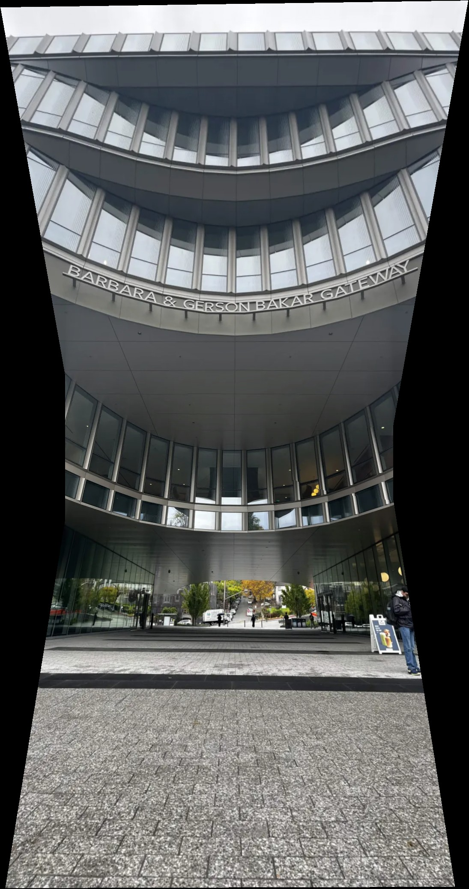
The sign across the facade is the check here: its lettering is crisp, with no doubled strokes, even though it lies in the overlap of the middle and top frames. The middle frame alone cuts the sign off at its right edge; the mosaic restores it. The hourglass outline comes from the geometry — the top and bottom frames are tilted away from the reference, so their warped outlines fan out around the narrower middle frame.
What I took away. Warping is mechanical once H is right, and H is only as good as the correspondences: a few pixels of error is invisible at the points themselves and obvious at the far corners of a frame. The projective model is also strictly a statement about rotating the camera about its center, so whatever is close to the camera is where a hand-held shot breaks it — the tree and the bench here — and blending is what hides that. Planar mosaics also stretch quickly as frames rotate away from the reference, so they cannot span 180° or more; all three sets stay well below that.
Project handout and starter notes by the CS 180 staff: Image Warping and Mosaicing, Part A.